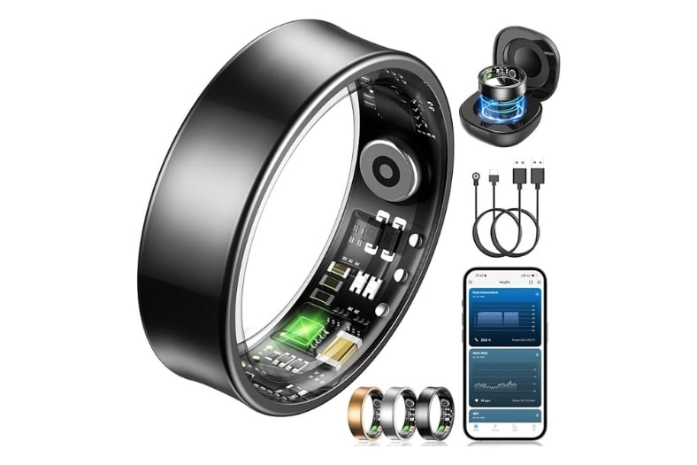
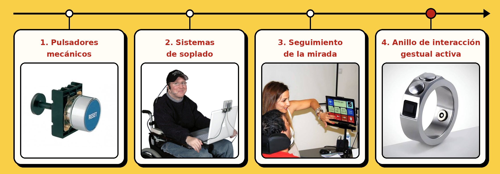

1. Descripción del dispositivo
El anillo de interacción gestual activa, también conocido como Smart Gesture Ring, se trata de un dispositivo tecnológico de tamaño reducido que se lleva en uno de los dedos de la mano, normalmente en el índice o en el pulgar. Su diseño es ligero y cómodo, por lo que permite utilizarlo durante bastante tiempo sin resultar molesto.
A diferencia de otros anillos inteligentes centrados en controlar la salud o la actividad física, este dispositivo está diseñado para controlar otros aparatos electrónicos mediante movimientos de la mano y gestos de los dedos. Su función principal es servir como alternativa o complemento al ratón y al teclado tradicionales.

Figura 1: Anillo gestual de interacción activa.
Para ello, incorpora sensores que detectan los movimientos y los transforman en órdenes que se envían a dispositivos como ordenadores, tablets o móviles. Por ejemplo, permite mover el cursor, hacer clic, pasar diapositivas o controlar el volumen sin necesidad de tocar directamente la pantalla ni utilizar un ratón.
Además, suele conectarse de forma inalámbrica mediante Bluetooth, lo que facilita su uso en diferentes situaciones.
Entre sus funciones principales destacan:
- Desplazamiento del cursor: Permite mover el puntero por la pantalla simplemente orientando o moviendo el dedo en el aire en cualquier dirección.
- Ejecución de clics y selección: Reconoce pequeños toques rápidos entre dedos para hacer clic izquierdo, clic derecho o doble clic.
- Navegación y scroll: Al deslizar el dedo o girar levemente la muñeca hacia arriba o abajo, se puede hacer scroll en páginas web o documentos largos.
- Atajos de teclado personalizables: Mediante software se pueden programar gestos concretos para realizar funciones habituales como copiar, pegar o cambiar de ventana.
- Control multimedia y presentaciones: Sirve para pasar diapositivas a distancia, subir el volumen o pausar vídeos durante exposiciones.
4. Evolución histórica: ¿A qué dispositivos sustituye?
Antes de que aparecieran dispositivos como el anillo de interacción gestual, ya existían otras formas de controlar un ordenador para personas que tenían dificultades para utilizar un ratón o un teclado normal. Con el paso del tiempo, estos sistemas han ido mejorando para intentar que utilizar un ordenador sea cada vez más fácil y cómodo.
Algunos de los dispositivos que se utilizaban anteriormente son:

Figura 2: Línea del tiempo de los dispositivos anteriores frente a la solución actual.
1. Pulsadores mecánicos
Antes: Eran botones grandes que se colocaban en la cabeza, la barbilla o los pies. La persona tenía que pulsarlos cuando aparecía en la pantalla la opción que quería seleccionar.
Problema: Era bastante lento, porque había que esperar a que apareciera cada opción para poder seleccionarla.
2. Sistemas de soplado
Antes: Funcionaban mediante un tubo colocado cerca de la boca. El usuario podía realizar acciones en el ordenador soplando o aspirando aire.
Problema: Podía resultar incómodo y cansado, ya que dependía constantemente de los movimientos de la boca.
3. Seguimiento de la mirada
Antes: Utilizaba una cámara que detectaba hacia dónde miraba la persona para mover el cursor y seleccionar opciones sin necesidad de utilizar las manos.
Problema: Podía fallar dependiendo de la luz, de la posición de la persona o incluso del uso de gafas.
4. Anillo de interacción gestual activa (Actualidad)
El anillo permite controlar el ordenador mediante gestos de forma más directa y cómoda, sin depender de la iluminación, utilizar tubos o mantener la mirada fija en la pantalla durante mucho tiempo.